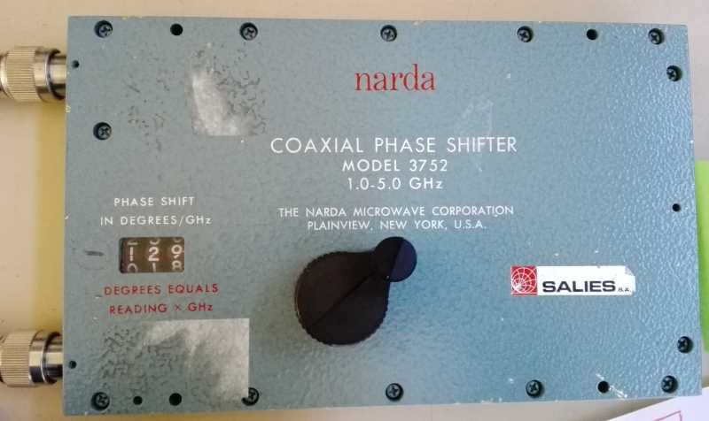
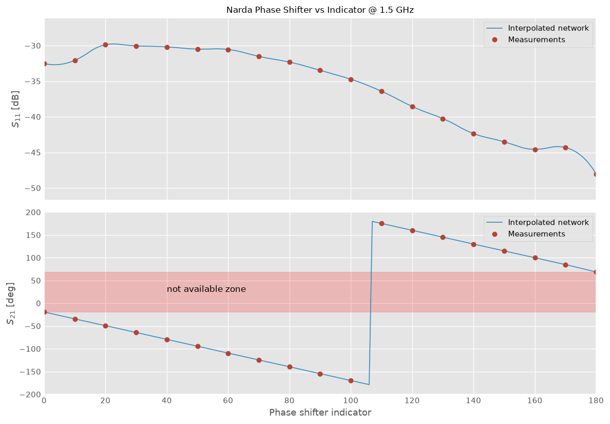

Interpolating Network Sets#
Frequently a set of Networks is recorded while changing some other parameters; like temperature, voltage, current, etc. Once this set of data acquired, it is sometime useful to estimate the behaviour of the network for parameter values that lie in between those that have been measured. For that purpose, interpolating a network from a set of network is possible. This example demonstrates how to do this using NetworkSets.
[1]:
import matplotlib.pyplot as plt
import numpy as np
import skrf as rf
rf.stylely()
Narda 3752 phase shifter#
In this example, we are characterizing an old narda phase shifter 3752 at 1.5 GHz.

:In order to deduce the phase shift that one can obtain at this specific frequency, we have measured scattering parameters in the 1-2 GHz band at 19 positions of the phase knob (from 0 to 180). These measurements are loaded into a NetworkSets object:
[2]:
# Array containing the 19 phase shift indicator values
indicators_mes = np.linspace(0, 180, num=19) # from 0 to 180 per 10
[3]:
ntw_set = rf.networkSet.NetworkSet.from_zip('phase_shifter_measurements/phase_shifter_measurements.zip')
print('ntw_set contains', len(ntw_set), 'networks')
ntw_set contains 19 networks
We extract from the network set the phase shift and \(S_{11}\) at the specific frequency of 1.5 GHz:
[4]:
f = '1.5 GHz'
phases_mes = np.squeeze([ntw[f].s21.s_deg for ntw in ntw_set])
s11_mes = np.squeeze([ntw[f].s11.s_db for ntw in ntw_set])
We would like however to get the phase shift values for intermediate settings of this phase shifter. To that purpose, let’s create a network from the interpolation of the measured networks.
[5]:
# the indicator values for which we want to interpolate the network
indicators = np.linspace(0, 180, num=181) # every degrees for 0 to 180
phases_interp = [ntw_set.interpolate_from_network(indicators_mes, phi)['1.5GHz'].s21.s_deg for phi in indicators]
phases_interp = np.squeeze(phases_interp)
s11_interp = [ntw_set.interpolate_from_network(
indicators_mes, phi, interp_kind='quadratic')['1.5GHz'].s11.s_db for phi in indicators]
s11_interp = np.squeeze(s11_interp)
print('We have interpolated the network for', len(phases_interp), 'points')
We have interpolated the network for 181 points
Now let’s plot everything
[6]:
fig, (ax1, ax2) = plt.subplots(2,1, figsize=(10,7), sharex=True)
ax1.set_title('Narda Phase Shifter vs Indicator @ 1.5 GHz', fontsize=10)
ax1.plot(indicators, s11_interp, label='Interpolated network')
ax1.plot(indicators_mes, s11_mes, '.', ms=10, label='Measurements')
ax1.legend()
ax1.set_ylabel(r'$S_{11}$ [dB]')
ax2.plot(indicators, phases_interp, label='Interpolated network')
ax2.plot(indicators_mes, phases_mes, '.', ms=10, label='Measurements')
ax2.set_xlabel('Phase shifter indicator')
ax2.set_ylabel('$S_{21}$ [deg]')
ax2.fill_between(indicators, phases_mes[0], phases_mes[-1], alpha=0.2, color='r')
ax2.text(40, 25, 'not available zone')
ax2.legend()
ax2.set_ylim(-200, 200)
fig.tight_layout()

[ ]: